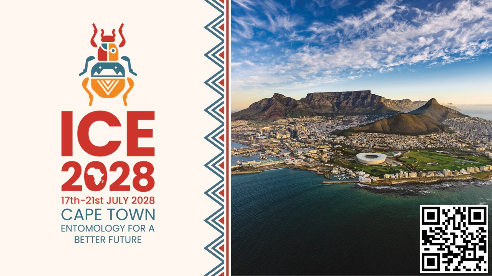
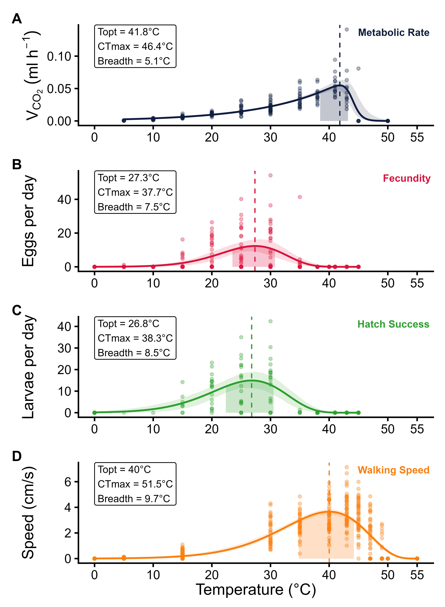
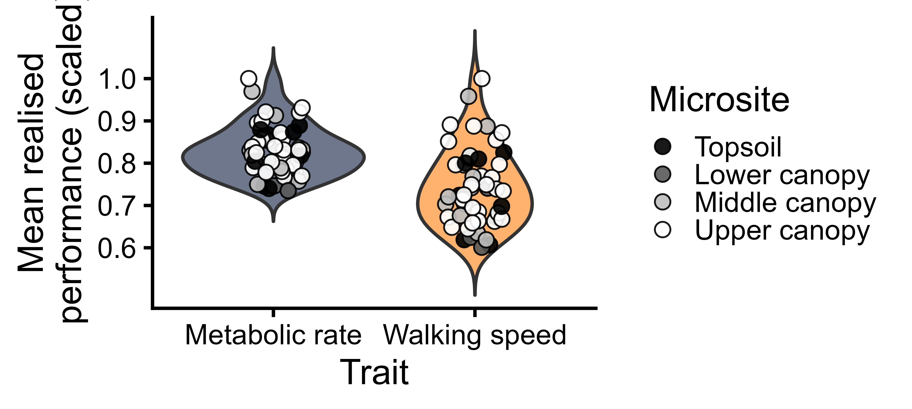

Tania Pogue
PhD Zoology Candidate • Stellenbosch University
Entomology • Eco-physiology • Thermal Ecology
PhD Zoology Candidate • Stellenbosch University
Entomology • Eco-physiology • Thermal Ecology
Thanks for scanning my poster! I'm delighted you stopped by. This page contains my SEB conference poster, research highlights, publications, and contact details. Please feel free to get in touch if you'd like to discuss the research or potential collaborations.
This research investigates how trait choice and microclimate variation impacts the thermal sensitivity and realised performance of the Harlequin ladybeetle, Harmonia axyridis. This research integrates laboratory thermal performance experiments with fine-scale environmental microclimate data to make robust, precise predictions of organismal performance and persistence.
This research combines controlled laboratory experiments with high-resolution environmental data to investigate how temperature and microclimate influences insect performance under natural conditions.
View the poster below or download the full-resolution PDF.
Download Poster (PDF) GitHub
Poster preview.

If you enjoyed this work, consider attending the next International Congress of Entomology (ICE 2028), which will be hosted in Cape Town, South Africa. It is an excellent opportunity to engage with researchers in ecology, evolution, physiology, and environmental science.
My PhD combines laboratory experiments with field microclimate measurements to understand how temperature influences insect performance under realistic environmental conditions. I investigate thermal performance across multiple traits and examine physiological responses to thermal extremes.

Figure 1. Thermal performance curves.Fig 1. Thermal performance curves for H. axyridis. Shaded regions indicate thermal breadth (≥80% of maximum performance). Curves represent data collected across 5–48°C, with key thermal parameters indicated for each trait.

Figure 2. Average scaled realised performance across field microclimates measured during summer.
I aim to develop integrated thermal ecology models that combine laboratory physiology with fine-scale environmental heterogeneity to improve predictions of species responses to climate change and extreme weather events.
I am a PhD Zoology candidate with expertise in insect eco-physiology, experimental design, physiological assays, insect rearing, science communication, and statistical modelling in R.
I gratefully acknowledge the Entomological Society of Southern Africa and the British Ecological Society for providing travel grants to support my attendance at the SEB Annual Conference and presentation of this research. I also thank Stellenbosch University, the Centre for Invasion Biology, the School for Climate Studies, the CLIME Lab, collaborators, and funding partners for supporting this work.
Email: tpogue@sun.ac.za
ORCID: 0000-0002-7645-7109
Google Scholar: Profile
LinkedIn: Tania Pogue
CLIME Lab: Website